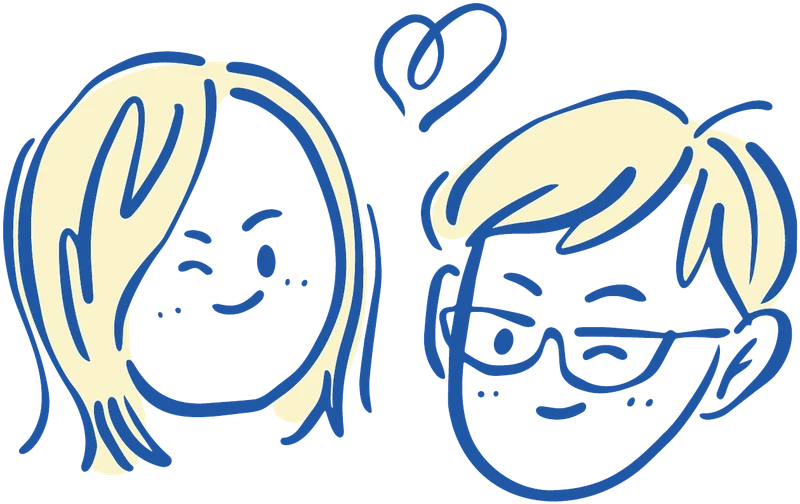
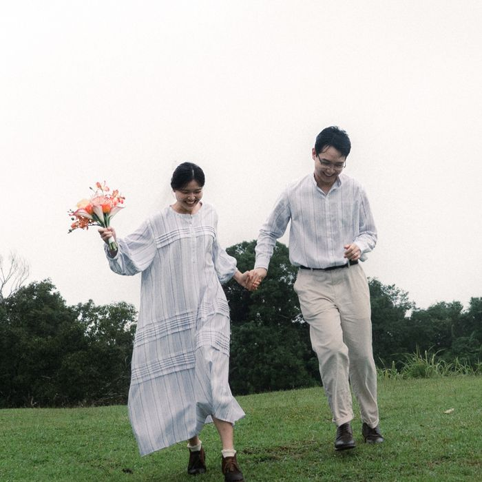
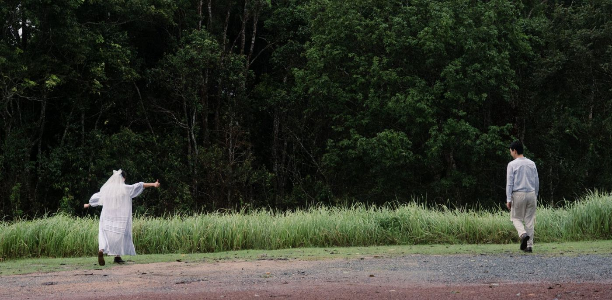
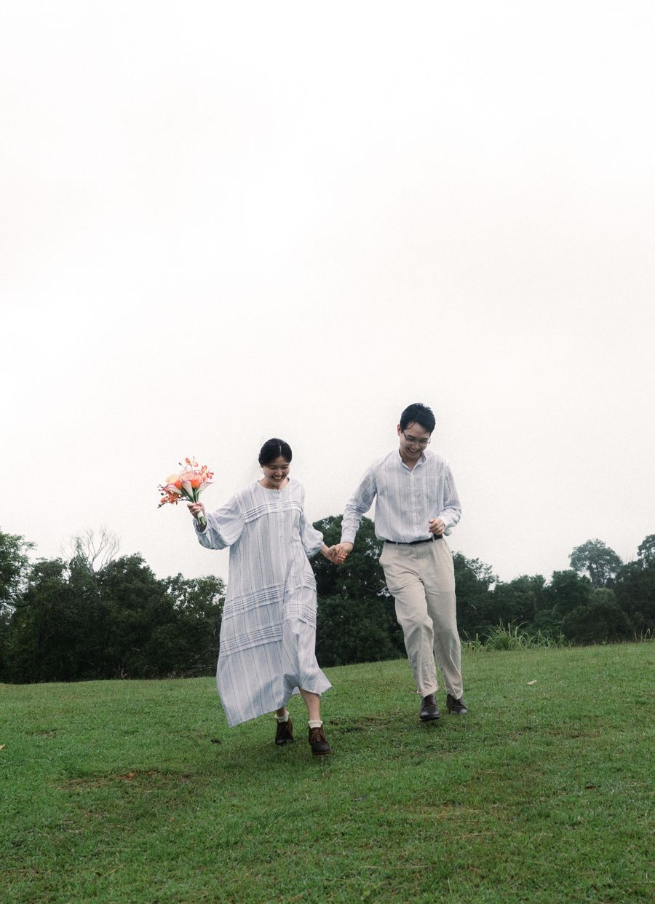
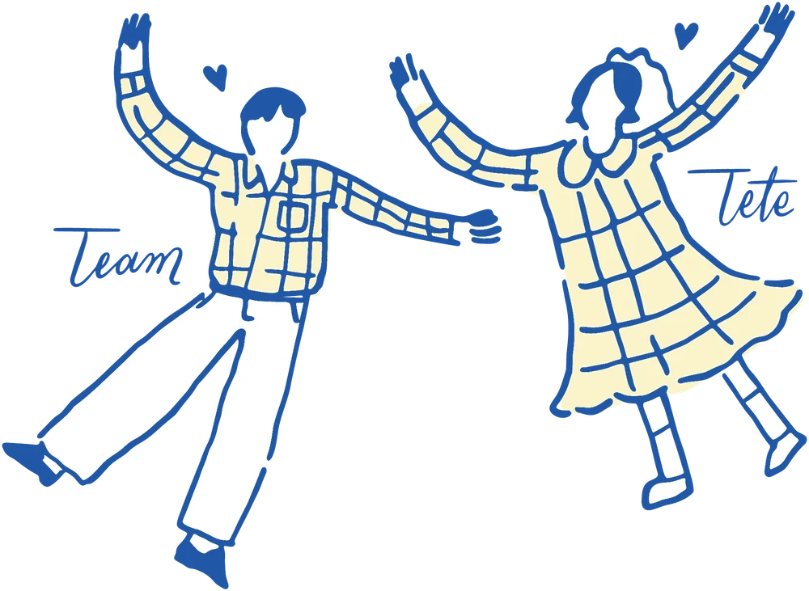
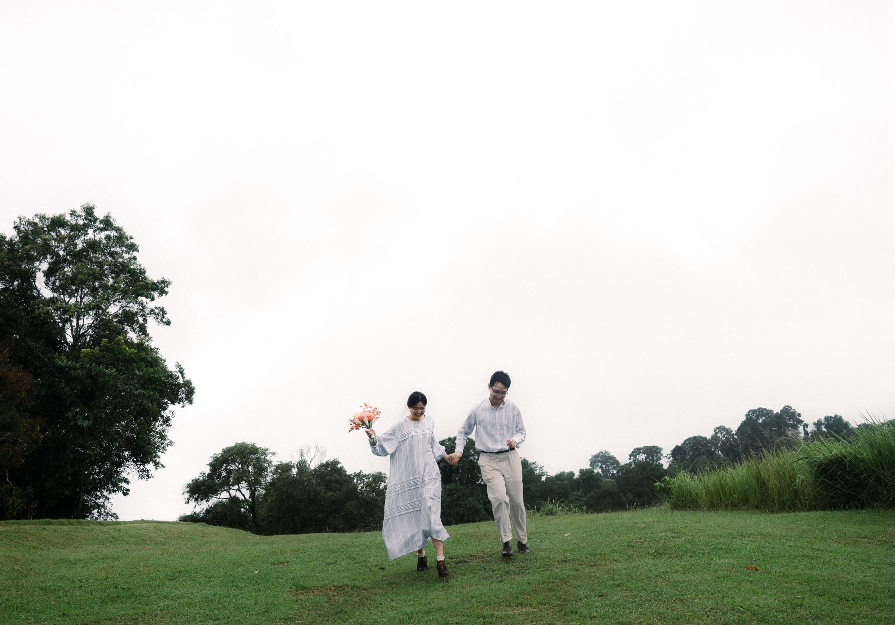
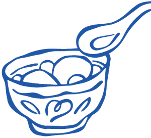
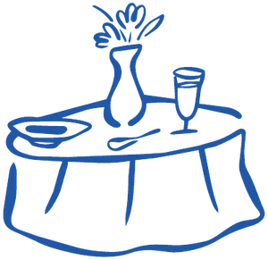
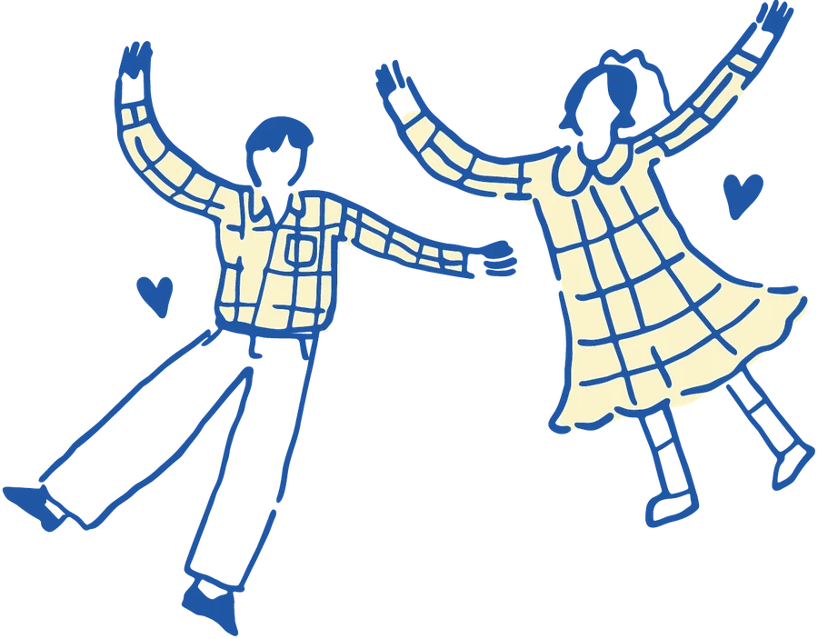

เรื่องของเรา
ใส่เรื่องราวของเรา 3–4 บรรทัด เช่น เจอกันครั้งแรกที่ไหน เป็นเพื่อนกันมานานแค่ไหน และวันที่ตัดสินใจจับมือกัน






ตอนนี้ เตเต้ (วิริยา วิริยพัตร) และ ทีม (ชัยวัฒน์ เศรษฐวิพัฒนชัย) เราทั้ง 2 คนได้ตัดสินใจแล้วว่าจะผนึกกำลังเพื่อร่วมเส้นทางเดินไปด้วยกัน เลยตั้งใจมาก ๆ ที่อยากจะชวนทุกคนมาเจอ มาทานอาหาร อร่อยๆ และร่วมยินดีไปกับพวกเรา
ซึ่งพวกเราไม่ได้มากันแค่ 2 คน แต่จะมี ปาป๊าศุภชัย – หม่าม้าหทัยรัตน์ วิริยพัตร และ อาม่าสมจิตต์, ปาป๊าประเสริฐ – หม่าม้าเพชรรัตน์ เศรษฐวิพัฒนชัย ที่จะคอยยินดีต้อนรับผู้รับจดหมายฉบับนี้ในงานเลี้ยงฉลองครั้งนี้แน่นอน!
เคลียร์คิวไว้ล่วงหน้า แล้วมาเจอกันนะคะ/นะครับ
นับถึงเช้าวันศุกร์ที่ 15 มกราคม 2570 เวลา 06.00 น.
วันนี้แหละ! แล้วเจอกันที่งานนะ
เจ้าบ่าวจะยกขบวนขันหมากมาสู่ขอเจ้าสาวที่โรงแรม ร่วมลุ้นไปด้วยกันว่าแต่ละด่านจะยาก-ง่ายอย่างไรบ้าง

ก้าวแรกของเจ้าสาวในการแจ้งเกิดกับเหล่าเขื่อที่บ้านเจ้าบ่าว หากใครไม่ได้ไปร่วมขบวน ก็นั่งจิบน้ำ/ทานอาหารแบบคนเกร๋ๆ ที่โรงแรมได้ อีกอึดใจเดียวเราจะกลับมาหาทุกคนแน่นอน

เจ้าบ่าว-เจ้าสาวกลับมาโชว์ตัว มาร่วมถ่ายภาพ และฉลองโต๊ะจีนร่วมกัน รับรองว่าอิ่มหน้าสำราญ ไช ไช โย โย อย่างแน่นอน
แนะนำมาก่อน 60 นาที จะได้แชะภาพกันแบบชิว ๆ
Beelive Convention Hall and Hotel (Hall3)
77/8 หมู่ 13 ต.นอกเมือง อ.เมืองสุรินทร์ จ.สุรินทร์ 32000

ใส่ชุดโทนพาสเทลสีไหนก็ได้ในห้าสีนี้ จะได้ออกมาสดใสเข้ากันทั้งภาพ
มกราคมที่สุรินทร์เช้า ๆ อากาศเย็น ช่วงขบวนขันหมากตอนหกโมงเช้าพกเสื้อคลุมบาง ๆ มาด้วยก็ดีนะ
ใส่เรื่องราวของเรา 3–4 บรรทัด เช่น เจอกันครั้งแรกที่ไหน เป็นเพื่อนกันมานานแค่ไหน และวันที่ตัดสินใจจับมือกัน




ร้านและที่เที่ยวที่เราอยากให้ลอง ส่วนใหญ่อยู่ในตัวเมือง ไม่ไกลจากโรงแรม
เวลาเปิด-ปิดอาจเปลี่ยนได้ เช็กในแผนที่อีกครั้งก่อนออกไปนะ
ช่วยบอกเราภายใน วันที่ตอบรับ จะได้เตรียมโต๊ะและอาหารให้พอดี
งานฉลองเริ่ม 12.00 น. แนะนำมาก่อนสัก 60 นาที จะได้ถ่ายรูปกันแบบไม่รีบ
นั่งพัก จิบน้ำ และทานอาหารว่างที่โรงแรมได้เลย เดี๋ยวเรากลับมาหาก่อนงานฉลองเที่ยง
โรงแรมมีที่จอดรถฟรี
ใส่คำตอบ
พักที่ Beelive Hotel ได้เลย สะดวกที่สุด ใส่ส่วนลด/รหัสจองถ้ามี
ชุดโทนพาสเทล ฟ้า เขียว เหลือง ส้ม หรือชมพู ดูได้ที่ การแต่งกาย
ชื่อ · เบอร์โทร
ชื่อ · เบอร์โทร
สำหรับคนที่มาไม่ได้แต่อยากส่งความยินดี ใส่ QR พร้อมเพย์ หรือเลือกไม่ใส่ส่วนนี้
ขอบคุณที่คอยสนับสนุนพวกเรามาตลอดค่ะ/ครับ